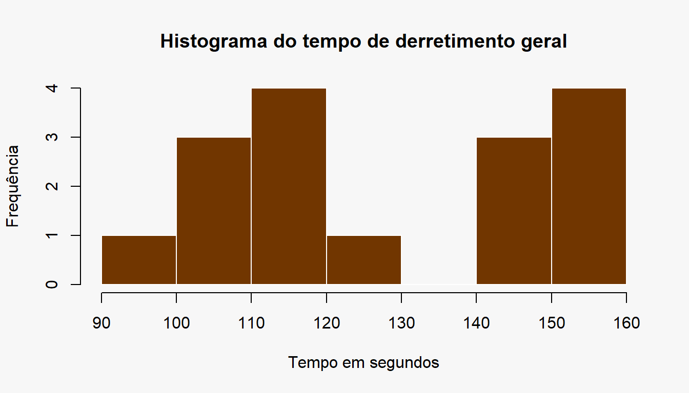
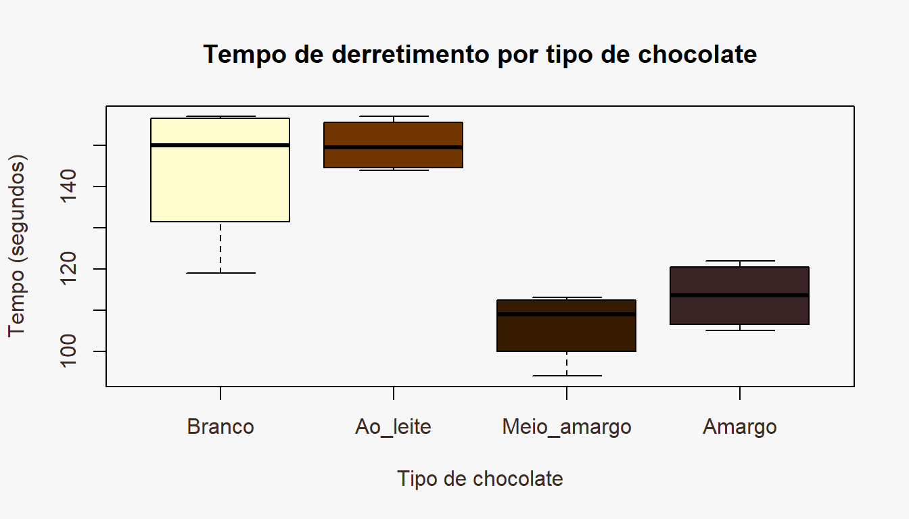
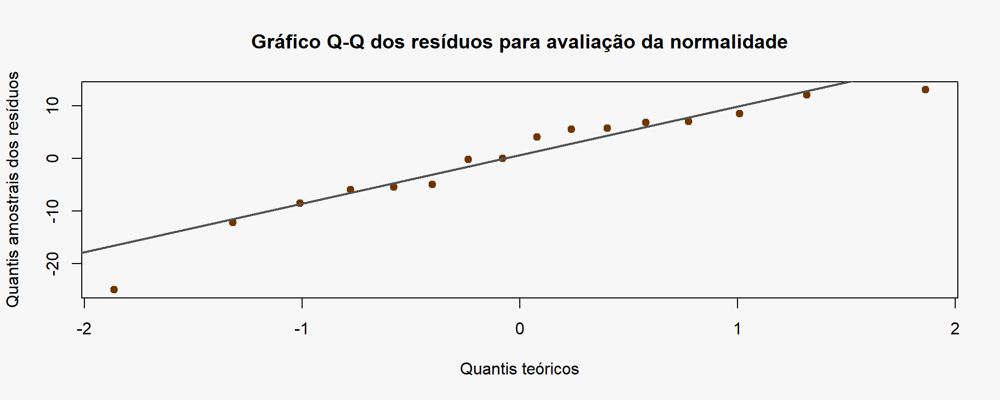
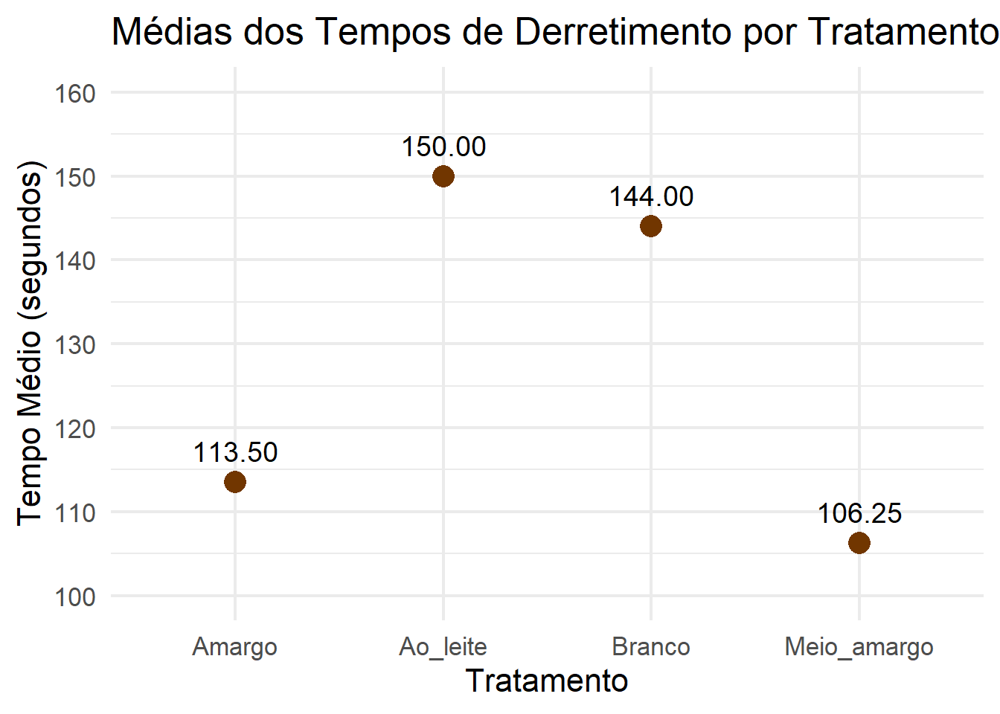

| Obs1 | Obs2 | Obs3 | Obs4 | |
|---|---|---|---|---|
| Branco | 119 | 144 | 156 | 157 |
| Ao_leite | 157 | 154 | 145 | 144 |
| Meio_amargo | 112 | 94 | 113 | 106 |
| Amargo | 122 | 119 | 108 | 105 |
Batalha dos Chocolates
Planejamento de Experimentos 01.2026
Profa. Dra. Amanda Merian Freitas Mendes
Projeto Integrador 1 – Experimentos na Prática
Relatório do experimento: Batalha dos Chocolates
Introdução
Com base no desejo de explorar o uso do chocolate em receitas diversas, com motivação dada pela época de páscoa, o experimento consistiu em comparar o tempo de derretimento de chocolates variados com base em seu tipo: branco, ao leite, meio amargo e amargo. Logo, o objetivo foi observar a diferença de tempo de derretimento de cada chocolate tendo em conta seu sabor. Para tanto, foram utilizadas uma barra de chocolate de 80g para cada tipo conforme descrito a seguir.
Hipóteses
H0: as médias dos tempos (em segundos) de derretimento dos chocolates são iguais. H1: pelo menos uma das médias dos tempos (em segundos) de derretimento dos chocolates é diferente.
Fatores e níveis
Fator
Tipo de chocolate.
Níveis
Chocolate branco, chocolate ao leite, chocolate meio amargo e chocolate amargo.
Unidade experimental
Cada porção de 20g de chocolate, totalizando 16 unidades experimentais, ou seja, 4 unidades de cada sabor.
Variável resposta
Tempo de derretimento da porção de chocolate em segundos.
Material e instrumentos
Para a realização do experimento foram utilizadas quatro barras de chocolate de 80g cada (uma barra para cada tipo de chocolate,) um cronômetro, uma balança, água para a técnica de banho-maria e utensílios de cozinha como potes, colheres, chaleira, faca e forma.
Casualização
Foram aplicados 4 tratamentos, nos quais foram realizadas 4 replicações do experimento, ou seja, para cada tipo/barra de chocolate, foram testadas 4 porções iguais em relação a seus tempos de derretimento. Para tal, foi feito um sorteio da ordem de execução dos tratamentos, garantindo que todos tivessem a mesma probabilidade de serem aplicados em qualquer posição da sequência a fim de evitar estimativas não tendenciosas dos efeitos.
Metodologia de execução
Cada repetição do derretimento dos 20 gramas de chocolate sorteado foi realizada em banho-maria, utilizando água previamente fervente e mantendo o aquecimento contínuo. Esse procedimento foi adotado para evitar variações de temperatura ao longo da experimentação, já que, se fosse utilizada água em temperatura ambiente no início do aquecimento, o resultado seria distinto. Além disso, o uso de micro-ondas também foi descartado, devido à distribuição irregular de calor e a alta probabilidade de queima do chocolate, que poderia interferir pesadamente nos resultados. Durante todo o processo de aquecimento, o chocolate foi misturado com uma colher até seu derretimento por completo. Não obstante, o tempo foi registrado no momento em que a porção se encontrava totalmente derretida. Desse modo, essas etapas e controle foram repetidas 16 vezes, compreendendo os 4 tipos de chocolate e suas 4 respectivas repetições aleatorizadas.
Tabela com Dados Brutos Observados
Análise Exploratória
| Tipo | Media | Desvio_Padrao |
|---|---|---|
| Branco | 144.00 | 17.68 |
| Ao_leite | 150.00 | 6.48 |
| Meio_amargo | 106.25 | 8.73 |
| Amargo | 113.50 | 8.27 |


A partir das estatísticas descritivas e dos gráficos iniciais, observou-se maior tempo médio de derretimento para o chocolate ao leite. O chocolate branco também apresentou média elevada, porém com maior variabilidade entre as repetições em comparação aos demais tipos.
No conjunto dos dados, o tempo médio de derretimento foi de aproximadamente 128 segundos. Além disso, o histograma indicou maior concentração de observações nos intervalos entre 110 e 120 segundos e entre 150 e 160 segundos, sugerindo dois agrupamentos predominantes nos tempos de derretimento.
Ajuste do Modelo
Para o experimento, foi utilizado o delineamento inteiramente casualizado (DIC) com quatro tratamentos e quatro repetições cada (balanceado), pois só há um fator de tratamento (tipos de chocolate), as unidades experimentais são homogêneas (mesmo peso) e não houve influência do ambiente. O modelo matemático para o DIC é:
\[ Y_{ij} = \mu + \tau_i + \varepsilon_{ij} \] em que:
\[ \begin{aligned} Y_{ij} & = \text{observação do tratamento } i \text{ na repetição } j \\ \mu & = \text{média geral} \\ \tau_i & = \text{efeito do tratamento } i \\ \varepsilon_{ij} & = \text{erro aleatório} \end{aligned} \]
Com as seguintes suposições a serem satisfeitas: \[ \varepsilon_{ij} \sim N(0,\sigma^2) \]
\[ \sum_{i=1}^{a}\tau_i = 0 \]
Assim, são calculados os estimadores dos parâmetros como:
Média geral:
\[ \hat{\mu} = \bar{Y}_{..} \]
(mu <- mean(as.matrix(tabela_dados)))[1] 128.4375Efeito dos Tratamentos
\[ \hat{\tau}_i = \bar{Y}_{i.} - \bar{Y}_{..} \]
tal <- tabela$Media - mu
(estimativas <- data.frame(Tratamento = c("Branco","Ao_leite","Meio_amargo","Amargo"),
Efeito_tratamento = round(tal,2))) Tratamento Efeito_tratamento
1 Branco 15.56
2 Ao_leite 21.56
3 Meio_amargo -22.19
4 Amargo -14.94Apresentação e Discussão da ANOVA:
Utilizando a ANOVA, realizou-se o teste de hipótese a seguir com significância de 5% e demais cálculos:
Hipóteses:
\[ H_0:\mu_1=\mu_2=\mu_3=\mu_4 \]
\[ H_1:\text{pelo menos uma média difere} \]
Graus de liberdade:
\[ \begin{aligned} t & : \text{número de tratamentos}\\ r & : \text{número de repetições}\\ n & : \text{número total de observações}\\ \\ GL_{trat} & = t-1 : \text{graus de liberdade dos tratamentos}\\ GL_{res} & = N - t :\text{graus de liberdade dos resíduos}\\ GL_{tot} & = N - 1: \text{graus de liberdade total}\\ \end{aligned} \]
t <- nrow(dados)
r <- ncol(dados)
N <- length(dados) (GL_trat <- t - 1) [1] 3(GL_res <- N - t) [1] 12(GL_total <- N - 1) [1] 15Somas de quadrados:
Soma de quadrados total:
\[ SQ_{tot} = \sum_{i=1}^{a}\sum_{j=1}^{r}(Y_{ij}-\bar Y_{..})^2 \]
(SQ_tot <- sum((dados - mu)^2))[1] 7187.938Soma de quadrados dos tratamentos:
\[ SQ_{trat} = r\sum_{i=1}^{a}(\bar Y_{i.}-\bar Y_{..})^2 \]
(SQ_trat <- r * sum((Medias - mu)^2))[1] 5690.188Soma de quadrados dos resíduos:
\[ SQ_{res} = SQ_{tot} - SQ_{trat} \]
(SQ_res <- SQ_tot - SQ_trat)[1] 1497.75Quadrados médios:
Quadrado médio do tratamento:
\[ QM_{trat} = \frac{SQ_{trat}}{t-1} \]
Quadrado médio do resíduo:
(QM_trat <- SQ_trat/GL_trat)[1] 1896.729\[ QM_{res} = \frac{SQ_res}{N-t} \]
(QM_res <- SQ_res/GL_res)[1] 124.8125Estatística de teste F:
\[ F0 = \frac{QM_{Trat}}{QM_{res}} \]
(F0 <- QM_trat/QM_res)[1] 15.19663p-valor:
\[ p-valor=P(F_{{GL_{trat},GL_{res}}} ≥F0) \]
(1 - pf(F0, GL_trat, GL_res))[1] 0.0002175153Tabela da ANOVA
Apesar do cálculo de cada termo em separado, é possível calcular diretamente os resultados para a tabela da ANOVA:
tipo <- factor(rep(c("Branco","Ao_leite","Meio_amargo","Amargo"), each=4))
dados_anova <- data.frame(tempo, tipo)
anova <- aov(tempo ~ tipo, dados_anova)
summary(anova) Df Sum Sq Mean Sq F value Pr(>F)
tipo 3 5690 1896.7 15.2 0.000218 ***
Residuals 12 1498 124.8
---
Signif. codes: 0 '***' 0.001 '**' 0.01 '*' 0.05 '.' 0.1 ' ' 1| GL | SQ | QM | F | p_valor | |
|---|---|---|---|---|---|
| Tratamento | 3 | 5690.188 | 1896.7292 | 15.19663 | 0.0002175 |
| Resíduos | 12 | 1497.750 | 124.8125 | NA | NA |
Conclusão do teste de hipóteses:
De modo a concluir o teste, após a construção da tabela ANOVA, verificamos o valor F0 calculado, 15.19663, em relação ao valor tabelado de F, dado por:
(qf(0.95, 3, 12))[1] 3.490295Com isso, é possível concluir que F0 > F, já que 15,19 > 3,49, rejeitando a hipótese nula ao nível de significância de 5%, isto é, há evidências de que pelo menos uma das médias é diferente das demais. Logo, há indícios de efeito significativo do tipo de chocolate sob seu tempo de derretimento.
Contrastes
Após a ANOVA indicar diferença significativa entre os tipos de chocolate, foi aplicado o teste de comparações múltiplas de Tukey. Esse teste permite identificar quais pares de médias diferem entre si, assim, foram comparados os tempos médios de derretimento entre todos os pares de chocolates.
Teste de hipótese para Tukey: \[ H_0:\mu_i-\mu_j=0 \]
\[ H_1:\mu_i-\mu_j\neq 0 \] Para rejeitar a hipótese H0, o valor absoluto da diferença das médias entre os tratamentos precisa ser maior que o valor crítico de q multiplicado pela raíz do quadrado médio dos resíduos dividido pelo número de repetições.
\[ \left|\bar{Y}_{i.}-\bar{Y}_{j.}\right| > q_{\alpha;t;GL_{res}} \sqrt{\frac{QM_{res}}{r}} \]
\[ Q = q_{\alpha;t;GL_{res}} \cdot \sqrt{\frac{QM_{res}}{r}} \]
ri <- 4
gl <- 12
# valor q de Tukey
q <- qtukey(0.95, 4, df = gl)
Q <- q*sqrt(QM_res/ri)
Q[1] 23.45361medias <- rowMeans(dados)
contrastes <- data.frame(
Comparacao = c(
"Branco x Ao leite",
"Branco x Meio amargo",
"Branco x Amargo",
"Ao leite x Meio amargo",
"Ao leite x Amargo",
"Meio amargo x Amargo"
), Diferencas = c(
abs(medias["Branco"] - medias["Ao_leite"]),
abs(medias["Branco"] - medias["Meio_amargo"]),
abs(medias["Branco"] - medias["Amargo"]),
abs(medias["Ao_leite"] - medias["Meio_amargo"]),
abs(medias["Ao_leite"] - medias["Amargo"]),
abs(medias["Meio_amargo"] - medias["Amargo"]) ))
contrastes Comparacao Diferencas
1 Branco x Ao leite 6.00
2 Branco x Meio amargo 37.75
3 Branco x Amargo 30.50
4 Ao leite x Meio amargo 43.75
5 Ao leite x Amargo 36.50
6 Meio amargo x Amargo 7.25Após os cálculos, foi possível observar que há diferenças entre os chocolates branco e meio amargo, branco e amargo, ao leite e meio amargo, e ao leite e amargo. Para concluir o teste, será feito uma tabela de comparação de médias.
library(agricolae)
tuk<- HSD.test(anova,"tipo")
tabela_tukey <- as.data.frame(tuk$groups)| tempo | groups | |
|---|---|---|
| Ao_leite | 150.00 | a |
| Branco | 144.00 | a |
| Amargo | 113.50 | b |
| Meio_amargo | 106.25 | b |
A partir da tabela de médias construída, observou-se a formação de dois grupos distintos de médias.
Os chocolates ao leite e branco tiveram maiores tempos médios de derretimento e não diferem significamente entre si.
De forma semelhante, os chocolates amargo e meio amargo formaram um segundo grupo com tempo médio menor, também sem diferença significativa entre si.
Exame dos Pressupostos do Modelo:
Para verificar se o modelo foi ajustado adequadamente, é necessário checar as suposições que envolvem as variáveis de erro, ou seja, verificar os resíduos. Para tal, são testadas:
Homogeneidade de variâncias:
A verificação da suposição de homogeneidade de variâncias para o erro foi feita a partir dos testes de Bartlett e Levene.
Teste de hipótese de Bartlett:
\[ H_0:\sigma_1^2=\sigma_2^2=\sigma_3^2=\sigma_4^2 \]
\[ H_1:\text{ pelo menos um } \sigma_i^2 \neq \sigma_j^2 \text{ ,i =1,...,t} \]
bartlett.test(tempo ~ tipo, data=dados_anova)
Bartlett test of homogeneity of variances
data: tempo by tipo
Bartlett's K-squared = 3.3349, df = 3, p-value = 0.3428Dada a significância de 0.05 e o p-valor 0.3428, não rejeitamos a hipótese nula, pois 0.3428 > 0.05. Isto é, não há evidências de que as variâncias dos erros sejam heterogêneas. Conclui-se que a suposição de homogeneidade de variâncias foi satisfeita pelo teste de Bartlett.
Teste de hipótese de Levene:
\[ H_0:\sigma_1^2=\sigma_2^2=\sigma_3^2=\sigma_4^2 \]
\[ H_1:\text{ pelo menos um } \sigma_i^2 \neq \sigma_j^2 \text{ ,i =1,...,t} \]
library(car)Carregando pacotes exigidos: carDataleveneTest(tempo ~ tipo, data=dados_anova)Levene's Test for Homogeneity of Variance (center = median)
Df F value Pr(>F)
group 3 0.8469 0.4944
12 Dada a significância de 0.05 e o p-valor 0.4944, não rejeitamos a hipótese nula, pois 0.3428 > 0.05. Isto é, não há evidências de que as variâncias dos erros sejam heterogêneas. Conclui-se que a suposição de homogeneidade de variâncias também foi satisfeita pelo teste de Levene.
Normalidade dos resíduos:
A verificação da suposição de normalidade para o erro foi feita a partir do teste de Shapiro-Wilk, já que a amostra é pequena.
Teste de hipótese:
\[ H_0:\ \varepsilon_{ij} \sim N(0,\sigma^2) \]
\[ H_1:\ \varepsilon_{ij} \not\sim N(0,\sigma^2) \]
shapiro.test(residuals(anova))
Shapiro-Wilk normality test
data: residuals(anova)
W = 0.92759, p-value = 0.2232Dada a significância de 0.05 e o p-valor 0.2232, não rejeitamos a hipótese nula, pois 0.2232 > 0.05. Isto é, não há evidências de que o erro não segue uma distribuição normal. Conclui-se que a suposição de normalidade foi satisfeita.
Visualmente, a satisfação dessa suposição pode ser verificada com base no Gráfico Q-Q pela observação da linha retilínea resultante:
par(bg = "#F7F7F7")
qqnorm(residuals(anova),
main="Gráfico Q-Q dos resíduos para avaliação da normalidade",
xlab = "Quantis teóricos",
ylab = "Quantis amostrais dos resíduos",
pch = 19,
col = "#713600")
qqline(residuals(anova),
col= "#535353",
lwd = 2)
Estimação das Médias com Erros-Padrão e IC:
Médias dos Tratamentos:
tabela[, c("Tipo", "Media")] Tipo Media
1 Branco 144.00
2 Ao_leite 150.00
3 Meio_amargo 106.25
4 Amargo 113.50Erro-padrão das Médias:
Para a estimação das médias dos tratamentos, utilizou-se o quadrado médio do resíduo, 124.8125, obtido na ANOVA.
\[ EP(\bar{Y}_i)=\sqrt{\frac{QM_{res}}{r}} \]
(EP <- sqrt(QM_res/r))[1] 5.585976Intervalos de Confiança:
Considerando 95% de confiança, tem-se que:
\[ IC(μi)=\bar{Y}i±t_{0.025,12}⋅EP \]
Para tal, calcula-se o valor de t:
(t_Student <- qt(0.975, df = 12))[1] 2.178813E os limites inferiores e superiores dos intervalos:
(IC_inf <- tabela$Media - t_Student * EP)[1] 131.8292 137.8292 94.0792 101.3292(IC_sup <- tabela$Media + t_Student * EP)[1] 156.1708 162.1708 118.4208 125.6708Dessa forma, temos que: Com 95% de confiança, para cada tipo de chocolate, os intervalos seguintes contêm os verdadeiros valores das médias de tempo de derretimento de volume 20g:
cat("Branco: [",round(IC_inf[1],2), ",", round(IC_sup[1],2), "]\n")Branco: [ 131.83 , 156.17 ]cat("Ao_leite: [", round(IC_inf[2],2), ",", round(IC_sup[2],2), "]\n")Ao_leite: [ 137.83 , 162.17 ]cat("Meio_amargo: [", round(IC_inf[3],2), ",", round(IC_sup[3],2), "]\n")Meio_amargo: [ 94.08 , 118.42 ]cat("Amargo: [", round(IC_inf[4],2), ",", round(IC_sup[4],2), "]\n")Amargo: [ 101.33 , 125.67 ]Gráfico da Média:
Para evidenciar as diferenças entre as médias, observa-se o gráfico:
library(ggplot2)
#| fig-width: 10
#| fig-height: 4
#| out-width: 100%
par(bg = "#F7F7F7")
grafico_medias <- data.frame(
Tratamento = c("Branco", "Ao_leite", "Meio_amargo", "Amargo"),
Media = c(144.00, 150.00, 106.25, 113.50)
)
ggplot(grafico_medias, aes(x = Tratamento, y = Media)) +
geom_point(size = 5, color = "#713600") +
geom_text(aes(label = sprintf("%.2f", Media)),
vjust = -1, size = 5) +
scale_y_continuous(limits = c(100, 160), breaks = seq(100, 160, 10)) +
labs(
title = "Médias dos Tempos de Derretimento por Tratamento",
x = "Tratamento",
y = "Tempo Médio (segundos)"
) +
theme_minimal(base_size = 16)
Conclusões:
Com base na análise de variância realizada, conclui-se que o tipo de chocolate exerce efeito significativo sobre o tempo médio de derretimento das porções analisadas de 20g, ao nível de significância de 5%. A hipótese nula de igualdade entre as médias foi rejeitada, indicando que pelo menos um dos tipos apresenta comportamento distinto em relação aos demais.
Entre os tratamentos avaliados, o chocolate ao leite apresentou o maior tempo médio de derretimento, seguido do chocolate branco. Já os chocolates amargo e meio amargo apresentaram menores tempos médios, sendo do último o menor valor observado no experimento.
A verificação dos pressupostos do modelo indica adequação da ANOVA aplicada, uma vez que as suposições de homogeneidade de variâncias e normalidade dos resíduos foram satisfeitas.
Dessa forma, os resultados sugerem que chocolates com diferentes composições apresentam comportamentos distintos quando submetidos ao aquecimento em banho-maria, informação relevante para a confeitaria.
Entretanto, destaca-se que as marcas utilizadas foram diferentes entre os tratamentos - tipos de chocolate, fator que pode ter influenciado os resultados observados. Foi verificado que o sabor ao leite apresentou características físicas distintas durante o derretimento, revelando pastosidade, o que pode explicar a sua maior média de tempo. Assim, conclui-se que, para resultados mais significativos, é necessária a realização de novos estudos que controlem simultaneamente tipo e marca do chocolate, além de ampliar o número de repetições experimentais para garantir maior precisão.